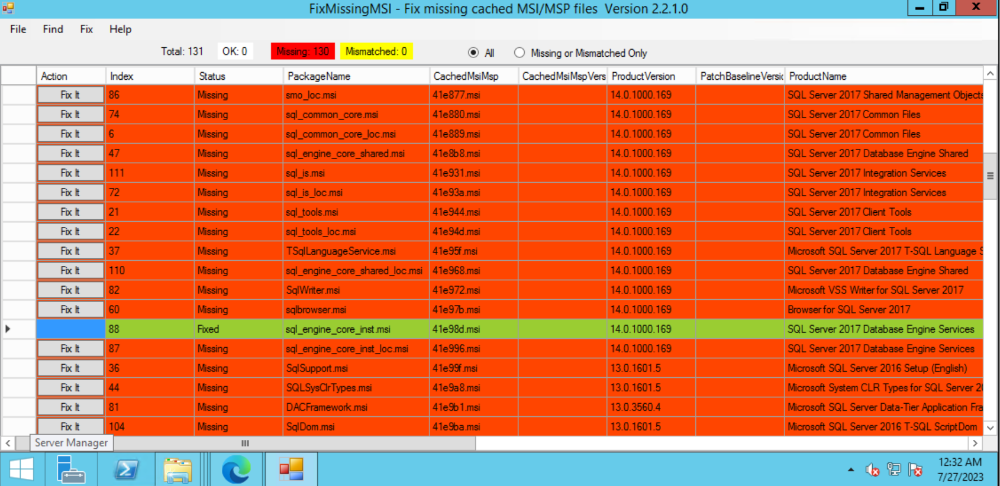
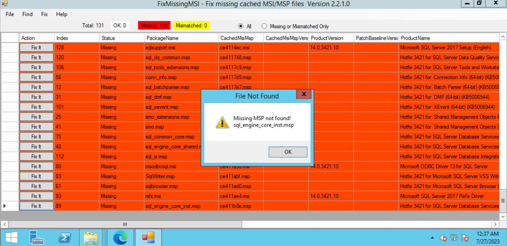

When patching a SQL Server and you encounter a "The cached MSI file…is missing" error, it means that the server is missing some cached file needed by the patch installer. Missing files can be retrieved from SQL Server Installers / Patch Installers.
- Check the error and download the installer. In the screenshot above, it’s version 14.0.1000.169 or the SQL Server 2017 RTM.
- Download FixMissingMSI.
- Locate the installer downloaded to scan and compare against the C:\Windows\Installer folder. 
- Choose to fix all the related items first. In this case, items with SQL Server 2017 or with version 14.0.1000.169. Do not use the Fix All button.
- Re-run the patch installer.
- If there is a new error, repeat steps 3-5.
- If the item is not present in the current source, look for details like Product Version to know what installer to download next. Then repeat from step 3 until you can proceed with the patch installation. 
Tip: To extract the file inside a patch installer, run below similar script in command prompt:
C:\Downloads>SQLServer2014-KB3130926-x64.exe /extract:C:\SQLDownloads